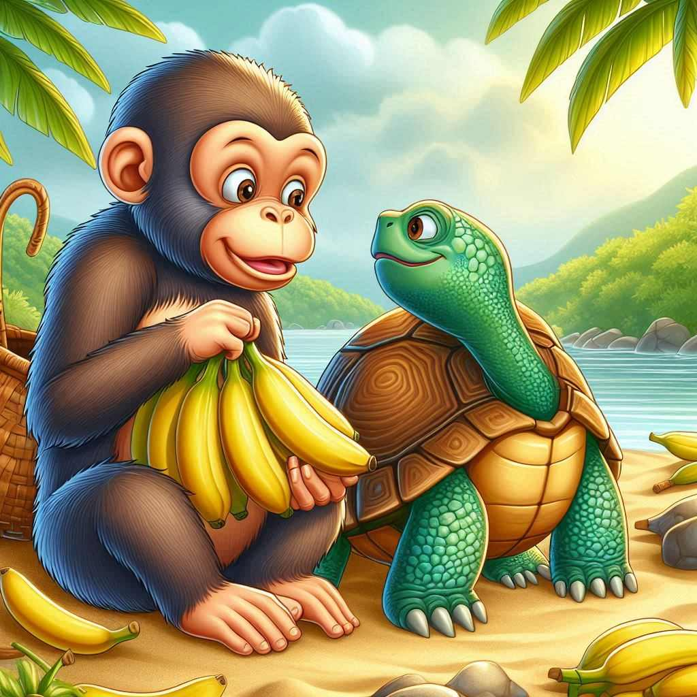
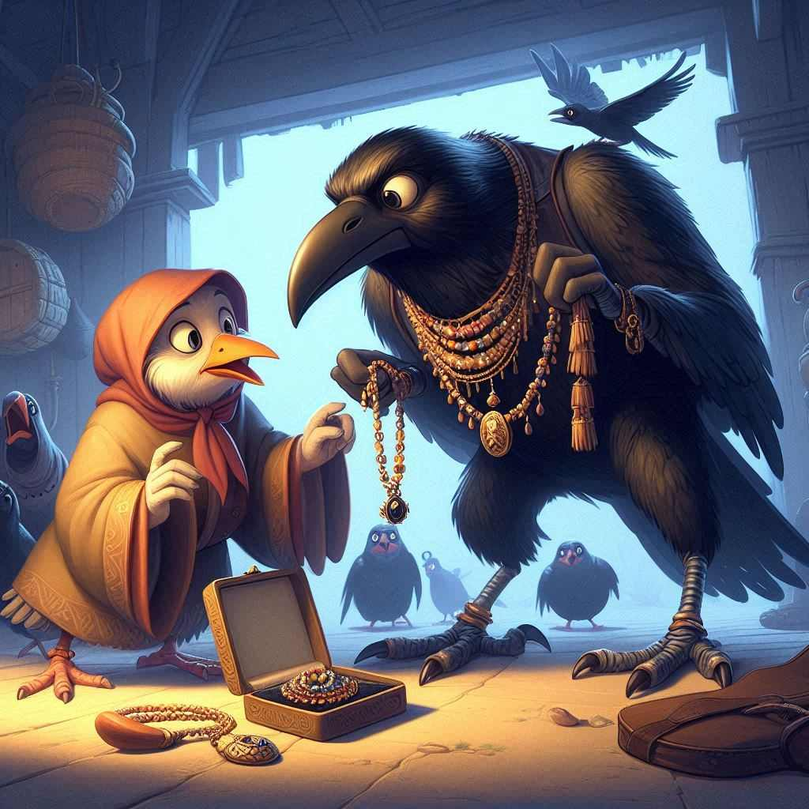
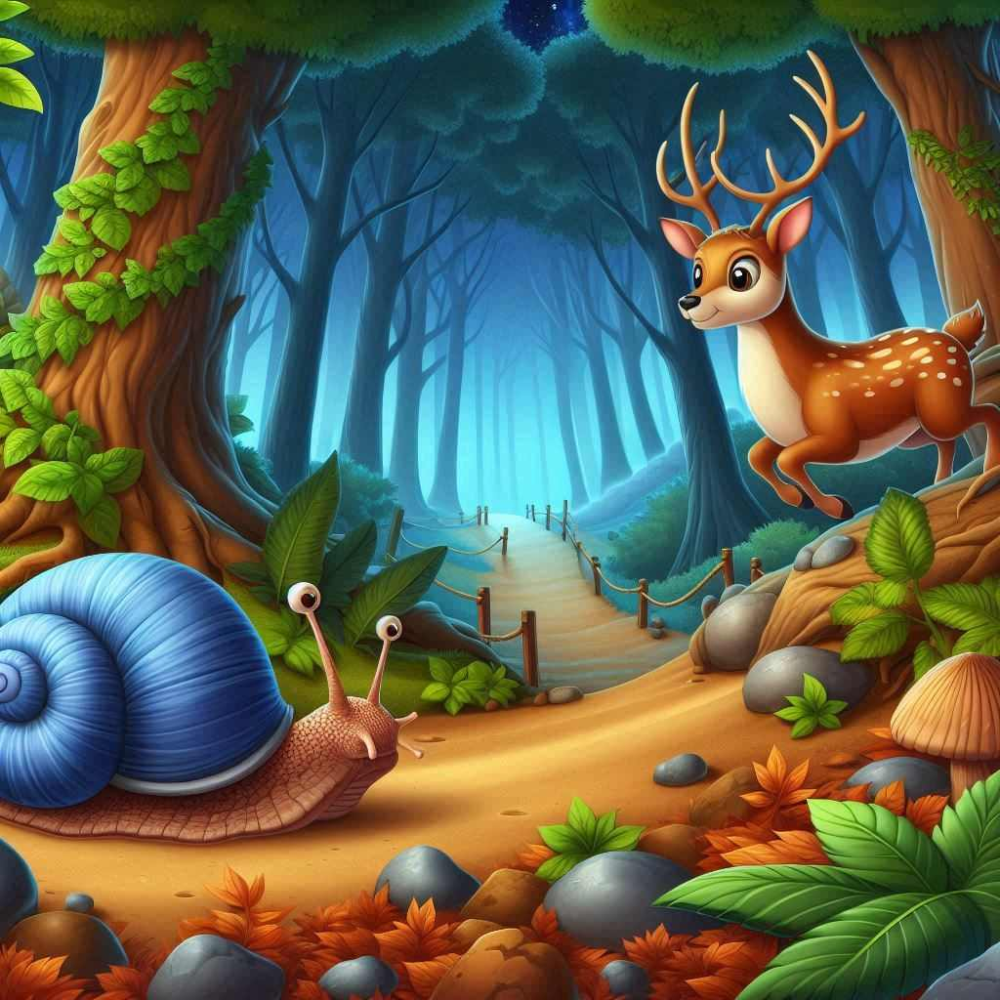

The Monkey and the Turtle
(Ang Matsing at ang Pagong)

The Monkey and the Turtle is a Philippine fable involving a turtle outwitting a monkey over a banana tree. The story was popularized by Jose Rizal, who made a publication of the story in English in the July 1889 issue of Trübner's Oriental Record in England, which is considered to be the formal beginning of Philippine children's literature.
English
A monkey and a turtle found a banana tree on a river.
They fished it out, and because each wanted the tree for himself, they cut it in half.
Now, the monkey, being the stronger one, took the part with leaves despite the turtle’s protests and carefully planted it in his backyard.
The turtle did the same for his part.
But because the part the monkey got had no roots, it died, while the turtle’s lived and sprouted leaves.
One day, the monkey visited the turtle, and they talked about their banana plants.
“Alas! My banana tree is dead!” wailed the monkey tearfully. “And yours?”
“Alive, and bearing fruit! But because I can’t climb up...”
“Don’t worry!” interrupted the monkey. “I’ll climb up for you.”
The turtle became very happy and accompanied the monkey to the place where the banana tree was.
The monkey climbed the tree at once and started eating, filling both cheeks.
“Give me some, too,” begged the turtle.
“Krrr! Not even the peels!” answered the monkey.
So, to get even with the monkey, the turtle nailed thorns and susông-paitan (a kind of snail with a small and pointed shell as its house) on the trunk of the banana tree and went to hide under a coconut shell.
“Ow! Ow!” said the monkey as he came down from the tree, and with much pain, went to sit on the coconut shell to tend his wounds.
But while he was pulling out the thorns and snails, his restless tail went inside a hole in the coconut shell.
The turtle, who saw a good opportunity, bit it. The monkey jumped and saw stars from the pain.
“So it’s you!” exclaimed the monkey coarsely as he lifted the coconut shell.
“Now I will make you pay for everything you did! You shall die! But how? Ah! Do you want me to crush you in this mortar or throw you into the river?”
“Crush me in the mortar but please don’t throw me in the river: I don’t want to drown!”
“Aha! So, you’re afraid of drowning? I guess I’ll have to drown you then!”
And into the river he threw the turtle who swam away happily.
As the saying goes: The monkey may be smart yet he can still be fooled.
Filipino
Nakakita ang isang matsing at isang pagong ng punong saging sa isang ilog.
Iniahon nila ito at dahil gusto itong angkinin ng bawat isa, hinati nila ito sa gitna.
At ang matsing, komo siya ang mas malakas, ang kumuha ng bahaging may dahon, sa kabila ng pagtutol ng pagong, at maingat itong itinanim.
Gayon din ang ginawa ng pagong sa napasakaniya. Pero dahil walang mga ugat ang bahaging kinuha ng matsing, namatay ito.
At ang sa pagong, nabuhay at nagkadahon.
Isang araw, bumisita ang matsing sa pagong at pinag-usapan nila ang kanilang mga punong saging.
“Ay! Namatay ang saging ko!” ngunguyngoy ng matsing na tumutulo pa ang luha. “At ang iyo?”
“Buhay, at may mga bunga! Pero dahil hindi ako makaakyat...”
“Ah! Huwag kang mag-alala,” putol ng matsing. “Ako ang aakyat para sa’yo.”
Naging napakasaya ng pagong at nagtungo sila kung saan naroon ang saging.
Agad umakyat ang matsing at nagsimulang kumain nang halos mabulunan.
“Uy! Bigyan mo rin ako,” pagmamakaawa ng pagong.
“Krrr! Ni balat di ko ibibigay sa iyo!” sagot ng matsing.
Kaya para gantihan ang matsing, kumuha ang pagong ng mga tinik at susông-paitan (isang uri ng susô na maliit at matulis ang bahay), at ipinako ang mga ito sa katawan ng punong saging, saka siya nagtago sa ilalim ng isang bao ng niyog.
“Aray! Aray!” sabi ng matsing habang bumababa, at sa labis na sakit, naupo siya sa bao ng niyog para hilumin ang sarili.
Pero habang binubunot niya ang mga susô mula sa kaniyang katawan, pumasok ang malikot niyang buntot sa butas ng bao.
Nakita ng pagong ang magandang pagkakataon at kinagat ang buntot ng matsing, na napatalon at nakakita ng mga bituin sa sobrang sakit.
“Ah, ikaw pala!” magaspang na bulalas ng unggoy na nadiskubre ang pagong.
“Ngayon pagbabayarin kita para sa lahat ng ginawa mo! Mamamatay ka! Pero paano kaya? Ah! Gusto mo bang durugin kita sa almires na ito o itapon kita sa ilog?”
“Durugin mo ako sa almires pero huwag mo akong ibabato sa ilog: ayokong malunod.”
“Hehe! Takot ka palang malunod? Puwes, lulunurin kita!”
At ibinato nga niya sa ilog ang pagong na masaya namang lumangoy palayo.
‘Ika nga ng kasabihan: Matalino man ang matsing ay napaglalalangan din.
The Lost Necklace
(Ang Nawawalang Kwintas)

The Lost Necklace is a Filipino folktale about a crow who lends his prized necklace to a hen. It also comes from the book, Filipino Popular Tales by Dean S. Fansler, published in 1921. The story was originally told in English by Facundo Esquivel, a Tagalog, who heard the story in a visayan language from a friend from Cebu.
English
Once a crow bought a fine necklace from a merchant.
He was very proud of his purchase, which he immediately put around his neck so that everybody could see it.
Then he flew away and came to a beautiful little garden, where he met his old friend the hen strutting about with her chicks following her.
The hen said to him, “Oh, what a fine necklace you have! May I borrow it? I will return it to you tomorrow without fail.”
Now, the crow liked the hen, so he willingly lent her the necklace for a day.
The next morning, when the crow returned for his property, he found the hen and her chicks scratching the ground near an old wall.
“Where is my necklace?” said the crow.
“It is lost,” said the hen.
“My chicks took it yesterday while I was asleep, and now they do not remember where they put it.
We have been looking for it all day, and yet we have not been able to find it.”
“You must pay for it at once,” said the crow, “or else I shall go to the king and tell him that you stole my necklace.”
The hen was frightened at this reply, and she began to wonder how she could raise the necessary money.
The crow, who was on his way to a fiesta, at last said impatiently, “I will take one of your chicks every day in payment of what you owe me.
As soon as you find the necklace, give it to me, and then I will stop eating your chicks.”
The hen had to be satisfied with this arrangement, for she feared that the crow would go to the king if she refused.
Unto this day, then, you can find hens and chicks together looking for the lost necklace by scratching the ground; and the crows are still exacting payment for the lost jewel by eating chicks.
It is said that the hens and chickens will never cease scratching the ground until the lost necklace is found.
Fiipino
Noong unang panahon, may isang uwak na bumili ng magandang kuwintas mula sa isang mangangalakal.
Ipinagmamayabang niya ang nabili kaya isinabit niya kaagad ito sa leeg niya upang makita ng lahat.
Pagkaraan, lumipad siya sa malayo hanggang sa nakarating sa isang magandang maliit na hardin.
Doon niya nakita ang matagal na niyang kaibigan na si Inahing Manok na mayabang na naglalakad sa buong paligid kasunod ang mga sisiw niya.
Sabi ni Inahin sa kaniya, “O, napakaganda naman ng kuwintas mo. Maaari ko bang hiramin? Ibabalik ko sa iyo ito bukas na bukas din.”
Gusto ni Uwak ang inahin kaya kusang ipinahiram nito ang kuwintas sa loob ng isang araw.
Kinaumagahan, bumalik si Uwak para sa alahas niya.
Nakita niya si Inahin at mga sisiw na nangangalaykay sa lupa malapit sa lumang pader.
“Nasaan ang kuwintas ko?” tanong ni Uwak.
“Nawawala,” sagot ni Inahin.
“Kinuha ito ng mga sisiw ko kahapon habang natutulog ako at ngayon hindi na nila matandaan kung saan nila ito nailagay. Maghapon na kaming naghanap ngunit hindi pa namin ito nakikita.”
“Kailangang bayaran ninyo ito kaagad,” wika ng uwak.
“Kung hindi, pupuntahan ko ang hari at sasabihin kong ninakaw ninyo ang kuwintas ko.”
Natakot ang inahin sa sagot na ito.
Nagsimula siyang mabahala kung paano siya makaiipon ng perang kailangan.
Ang uwak na papunta noon sa isang pista ay nayayamot na nagsabi, “Kukuhanin ko ang isa sa mga sisiw mo kada araw bilang kabayaran sa utang mo. Kapag nahanap mo ang kuwintas, ibigay mo kaagad sa akin. Saka ko lang titigilan ang pagkain sa mga sisiw mo.”
Napilitang makontento ang inahin sa kasunduang ito, sapagkat kung tatanggi siya, baka magpunta ang uwak sa hari.
Hanggang ngayon, makikita mo na magkasama ang inahin at ang mga sisiw na nangangalaykay sa lupa sa paghahanap sa nawawalang kuwintas.
Ang mga uwak naman ay patuloy na naghahanap ng bayad sa nawawalang alahas sa pamamagitan ng pagkain ng mga sisiw.
Sinasabi na ang mga inahin at sisiw ay di kailanman titigil sa pagkahig sa lupa hangga’t hindi nahahanap ang nawawalang kuwintas.
Ten Friends
(Sampung Magkakaibigan)

Ten Friends is a story about Karlo and his nine classmates. The story explores the dynamics of their relationship. It was written by Pipa Escalante and published by Adarna House in 2008.
English
There were then friends.
Karlo and his nine classmates.
Slow Ben, shabby Susie, Leo, Lara, Karen, Joo-chan who was Korean, the twins Eric and Ella, and sleepy Anton.
They liked playing, studying, and helping each other,
But sometimes, Karlo was not fun to be with.
“Belat!” Karlo teased, when he overtook slow Ben in the line. Ben shook his head and walked away from Karlo.
“Gross! You’re not a friend of mine!” exclaimed Karlo when he found himself beside shabby Susie.
Karlo did not notice Leo’s tall tower of blocks.
Leo’s tall tower fell to the ground.
“Ha-ha-ha! Serves you right!” Karlo told Leo.
“Give that to me!” Karlo said as he grabbed Lara’s toy.
“This is mine, too,” Karlo said, as he grabbed the suman that Karen was eating.
Karlo also hit the noodle Joo-chan the Korean was eating but he did not say sorry.
“Don’t you know how to play this game? Don’t join this game anymore!” Karlo taunted Eric and Ella after he lost at pompiyang and was the next “it” in their game of hide-and-seek.
Karlo tried to wake Anton up so that they could play.
“Heeeeey! Wake up!” Karalo shouted at sleepy Anton.
But Anton did not wake up.
“You’re not my friend!” Karlo told Anton even if Anton could not hear him.
Karlo was all alone now.
One day, Karlo came to school and looked for his classmates.
He wanted to play but there was no one in the classroom.
There was no one in the playground. There was no one in the canteen.
Karlo started to wonder.
Karlo saw his classmates playing happily in the school yard.
They never used to play there.
They saw Karlo but they didn’t invite him to join them.
“Do you want to play with me?”
Karlo started to cry when he realized that nobody wanted to play with him.
Maybe this was how bad his classmates felt when he grabbed their toys and food.
Maybe this was how painful it felt when he teased and fought with them.
It was then that Karlo thought of being a nicer classmate.
The next day, Karlo approached slow Ben while they were lining up.
“You can line up ahead of me,” Karlo told Ben.
“I love you!” he told shabby Sussie and kissed her.
“You can share my snack,” Karlo told Karen and Joo-chan at recess time.
Karlo lent Lara his new toy. “You can play with it first, okay? He told Lara.
He invited Leo to make a tall tower of blocks.
“What games are you playing? Can I join you?” Karlo asked Eric and Ella.
“Shhh. . . we might wake Anton up with our noise” reminded Karlo.
There were ten friends. Karlo and his nine classmates.
Filipino
May sampung magkakaibigan. Si Karlo at siyam niyang kaklase.
Si Ben na kay bagal, si Susie na madungis, si Leo, si Lara, si Karen, si Joo-chan na Koreano, ang kambal na sina Eric at Ella, at ang antuking si Anton.
Mahilig silang maglaro, mag-aral, at magtulungan.
Pero minsan, si Karlo ay hindi masayang kasama.
“Belat!” ang tukso ni Karlo, nang maunahan niya sa pila ang babagal-bagal na si Ben.
Umiling si Ben at lumayo kay Karlo.
“Kadiri ka, hindi kita bati!” sambit in Karlo nang napatabi siya kay Susie na madungis.
Di napansin ni Karlo ang mataas na tore ng bloke ni Leo. Bumagsak ang toreng gawa ni Leo.
“Ha-ha-ha! Buti nga!” sabi niya kay Leo.
“Akin na ‘yan!” Biglang agaw ni Karlo sa laruan ni Lara.
“Akin rin ‘to” sabi ni Karlo, sabay agaw ng suman na kinakain ni Karen.
Nasagi rin ni Karlo ang kinakaing mami ni Joo-chan na Koreano pero hindi siya nag-sorry.
“Hindi ba kayo marunong sumunod sa laro? Huwag na nga kayong sumali!” ang sabi ni Karlo kina Eric at Ella pagkatapos siyang matalo sa pompiyang. At siya na ang susunod na taya sa taguan.
Sinubukang gisingin ni Karlo si Anton para makipaglaro.
“Hoooyyy! Gising ka!” ang sigaw ni Karlo sa antuking si Anton.
Pero hindi nagising si Anton. “Hindi kita bati!” sabi ni Karlo kay Anton kahit di siya naririnig nito.
Nag-iisa na lamang si Karlo.
Isang araw, pagdating ni Karlo sa paaralan, hinahanap niya ang kaniyang mga kaklase.
Gusto sana niyang makipaglaro pero walang bata sa silid nila.
Wala rin ring bata sa palaruan.
Wala rin bata sa canteen.
Takang-taka si Karlo.
Nakita ni Karlo na masayang naglalaro ang kaniyang mga kaklase sa bakuran ng kanilang paaralan.
Hindi naman sila dating naglalaro doon.
Nakita nila si Karlo pero di nila ito inimbitahang makipaglaro sa kanila.
“Ikaw, gusto mo bang makipaglaro sa akin?”
Naiyak si Karlo nang naisip niya na walang gustong makipaglaro sa kaniya.
Ganito siguro kasamâ ang naramdaman ng mga kaklase niya kapag inaagawan niya sila ng laruan at baon.
Ganito siguro kasakit ang pang-aaway at panunuksong ginagawa niya sa kanila.
Noon naisip ni Karlo na maging mas mabuting kaklase.
Kinabukasan, lumapit si Karlo kay Ben na kay bagal sa pila.
“Mauna ka na sa akin sa pila,” sabi ni Karlo kay Ben.
“Mahal kita!” sabi niya kay Susie na madungis, sabay halik dito.
“Hati tayo sa baon ko,” Sabi ni Karlo kina Karen at Joo-chan noong recess.
Ipinahiram ni Karlo ang kaniyang bagong laruan kay Lara. “Ikaw muna ang maglaro tapos ako naman, ha?” sabi niya kay Lara.
Inanyayahan niya si Leo na gumawa ng mataas na tore ng bloke.
“Paano ba ‘yang laro ninyo? Puwede ba akong sumali?” pakiusap ni Karlo kina Eric at Ella.
“Shhh. . . huwag tayong maingay, magigising si Anton,” paalala ni Karlo.
May sampung magkakaibigan. Si Karlo at siyam niyang kaklase.
The Snail and the Deer
(Ang Suso at ang Usa)

The Snail and the Deer is a Visayan folktale about a race between a snail and a deer that highlights themes of cleverness and teamwork. It comes from the book "Filipino Popular Tales" by Dean S. Fansler, published in 1921 by the American Folklore Society and G. E. Stechert and Co.
English
The deer made fun of the snail because of his slowness, so the latter challenged the former to a race.
"We will race to the well on the other side of the plaza," said the snail.
"All right," replied the deer.
On the day of the race, the deer ran swiftly to the well, and when he got there he called, "Mr. Snail, where are you?"
"Here I am," said the snail, sticking his head up out of the well.
The deer was very much surprised, so he said: "I will race you to the next well."
"Agreed," replied the snail.
When the deer arrived at the next well, he called as before, "Mr. Snail, where are you?"
"Here I am," answered the snail. "Why have you been so slow? I have been here a long time waiting for you."
The deer tried again and again, but always with the same result; until the deer, in disgust, dashed his head against a tree and broke his neck.
Now the first snail had not moved from his place, but he had many cousins in each of the wells of the town and each exactly resembled the other.
Having heard the crows talking of the proposed race, as they perched on the edge of the wells to drink, they determined to help their cousin to win it, and so, as the deer came to each well, there was always a snail ready to stick his head out and answer, "Here I am" to the deer's inquiry.
Filipino
Pinagtatawanan palagi ni Usa ang mabagal na si Suso.
Dahil dito, hinamon ni Suso si Usa na magpaligsahan sila sa pagtakbo.
“Mag-unahan tayong makarating sa balon sa may gilid ng plasa,” sabi ni Suso.
“Sige,” ang sagot ni Usa.
Dumating na ang araw ng paligsahan.
Gaya ng inaasahan, mabilis tumakbo si Usa.
Narating niya agad ang balon.
“Ginoong Suso, nasaan ka na?”
“Narito ako,” sabi ni Suso, sabay na inilabas ang kaniyang ulo sa bunganga ng balon.
Namangha si Usa at hindi niya akalaing naunahan pa siya ni Suso.
Kaya’t sinabi niya: “Mag-unahan tayong muli papunta sa susunod na balon.”
“Sang-ayon ako,” ang sagot ni Suso.
Nang dumating na si Usa sa ikalawang balon, tinawag niyang muli si Suso. ”Ginoong Suso, nasaan ka na?”
“Narito ako,” ang sambit ni Suso. “Bakit ang bagal bagal mo? Kanina pa ako naghihintay sa iyo, Ginoong Usa.”
Nagulat si Usa.
Hinamon nang paulit ulit ni Usa si Suso sa pagtakbo papunta sa iba pang balon pero pareho ang resulta – palaging nauuna sa kaniya si Suso.
Sa sobrang pagkabigo, inuntog niya ang kaniyang ulo sa isang puno.
Nabali ang kaniyang mga sungay at nagkasugat-sugat ang kaniyang mukha.
Ano ang talagang nangyari?
Ang totoo, ang unang suso ay hindi nakaalis sa kaniyang puwesto.
May mga pinsan pala siya sa iba’t ibang balon na nakapaligid sa bayan.
Magkakahawig sila.
Nalaman ng mga pinsan ni Suso ang paligsahan sa pagtakbo dahil sa pag-uusap ng mga uwak habang sila ay umiinom sa balon.
Dahil dito, nagpasiya ang mga pinsan ni Suso na tulungan siyang manalo sa paligsahan.
Kaya naman, sa tuwing maghahanap at magtatanong si Usa kay Suso sa bawat balon, agad-agad na may lalabas na ulo ng isang suso at handang sumagot na, “Narito ako!”
Nang mabalitaan ni Suso ang nangyari kay Usa, agad-agad na tinipon nito ang kaniyang mga pinsan.
Nagpasiya silang tulungan si Usa. Nagdala sila ng halamang-gamot at inilagay iyon sa mga sugat ni Usa.
Pinatawad nila ang isa’t isa at namuhay silang masaya at payapa sa kanilang bayan.